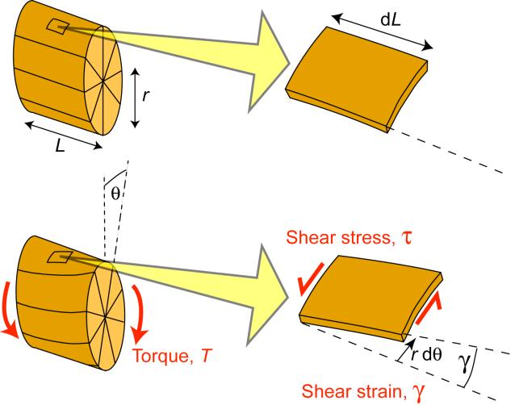
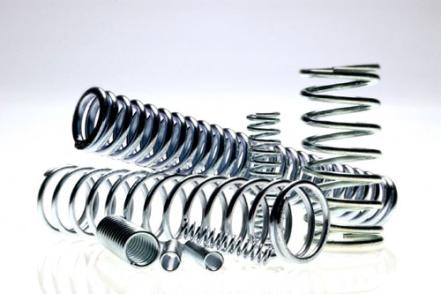
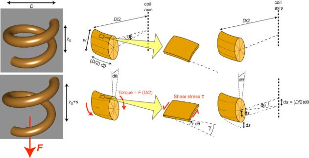

The original, as published: DoITPoMS, University of Cambridge, Bending and Torsion of Beams. CC BY-NC-SA 4.0, https://creativecommons.org/licenses/by-nc-sa/4.0/. Imported as published, from https://www.doitpoms.ac.uk/tlplib/beam_bending/ https://www.doitpoms.ac.uk/tlplib/beam_bending/
Torsion is the twisting of a beam under the action of a torque(twisting moment). It is systematically applied to screws, nuts, axles, drive shafts etc, and is also generated more randomly under service conditions in car bodies, boat hulls, aircraft fuselages, bridges, springs and many other structures and components. A torque, T , has the same units (N m) as a bending moment, M . Both are the product of a force and a distance. In the case of a torque, the force is tangential and the distance is the radial distance between this tangent and the axis of rotation.

Torsion of a Cylindrical Bar
Torsion of a cylindrical bar is illustrated in the figure. It can be seen that the shear strain in an element of the bar is given by
\[\gamma = \frac{{r\;{\rm{d}}\theta }}{{{\rm{d}}L}}\]
This equation applies both at the surface of the bar, as shown, and also for any other radial location, using the appropriate value of r . Clearly, the shear strain varies linearly with r , from zero at the centre of the bar to a peak value at the free surface.
The shear stress, τ, at any radial location, is related to the shear strain by
\[\tau = G\gamma \]
where G is the shear modulus. It follows that
\[\tau = Gr\frac{{{\rm{d}}\theta }}{{{\rm{d}}L}}\]
The torque, T , can therefore be written as
\[T = \int\limits_A {{\rm{d}}T = } \int\limits_A {\tau \;r\;{\rm{d}}A} = \int\limits_A {G\;{r^2}\frac{{{\rm{d}}\theta }}{{{\rm{d}}L}}{\rm{d}}A} \]
As for the beam bending case, the geometrical integral is represented as a (polar) second moment of area
\[{I_{\rm{P}}} = \int\limits_A {{r^2}{\rm{d}}A} \]
For a solid cylinder of diameter w , this can be written as
\[{I_{\rm{P}}} = \int\limits_A {{r^2}} {\rm{d}}A = \int\limits_0^{d/2} {{r^2}2} \pi r\;{\rm{d}}r = \pi \left[ {\frac{{{r^4}}}{2}} \right]_0^{w/2} = \frac{{\pi {w^4}}}{{32}}\]
The torque is thus given by
\[T = G\;{I_{\rm{p}}}\frac{{{\rm{d}}\theta }}{{{\rm{d}}L}}\]
Comparing this equation with the corresponding one for beam bending
M = E I Κ
it can be seen that the torsional analogue for the curvature of a bent beam is the rate of twist along the length of the bar. This can be measured experimentally, although not quite so easily as a curvature (because the macroscopic shape of the bar does not actually change - at least when it is straight - see next page for an important example of a case when it is NOT straight).

A collection of assorted springs
An interesting example of torsion is provided by the deformation that takes place during the loading of springs (torsional coils). Of course, these have a wide range of engineering applications. They are normally made of (high yield stress) metals. (Ceramics are too brittle, while polymers are insufficiently stiff: fibre composites are also unsuitable - see below.) When a spring is loaded (compressed or extended), the deformation experienced by the wire is one of pure torsion. This is illustrated in the diagram below.

Illustration of how the application of an axial load, F, to a spring generates torsional deformation of the wire and hence axial extension of the spring.
The torque acting on the wire is given by
\[T = F\left( {\frac{D}{2}} \right)\]
in which F is the axial force and D is the coil diameter. It can be shown ( click here ) that the shear stress within the wire (at a distance r from the core) is given by
\[\tau = \frac{{Tr}}{{2I}}\]
in which I is the bending second moment of area (NOT the polar moment), and the shear strain in the wire is related to the change in axial extension of one turn of the coil, s , by the expression
\[\gamma = \frac{{2sr}}{{\pi {D^2}}}\]
Measurement of the extension (per turn) of a spring, as a function of the applied force (first carried out systematically by Robert Hooke , in his pioneering work on the nature of elasticity) is a very convenient method of obtaining elastic constants. The ratio of τ to γ , obtained from the above equations, gives the shear modulus, G . The loading geometry is such that a large axial extension (per turn) is generated, while the strains within the material remain low, particularly for springs with a large ratio of D to w . Of course, this is exactly why springs are of practical use - they accommodate large deflections or displacements without the material being strained beyond its elastic limit (which is small for all materials except rubbers).
It's interesting to note why springs are not normally made of fibre composites. The natural orientation for the fibres would be along the length of the rod (wire) to be formed into a coil. However, these fibres would have very little effect on the shear modulus in a transverse section of the rod, which is the property that controls the elastic extensions of the spring. It might as well have been made solely of the polymeric matrix (although such springs have a very low stiffness). It's only by winding fibres into the hoop direction of the rod that the shear stiffness of transverse sections would be boosted. However, this is impractical, at least for anything but very large scale springs, since it would require the fibres to adopt higher curvatures than would normally be possible.